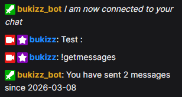
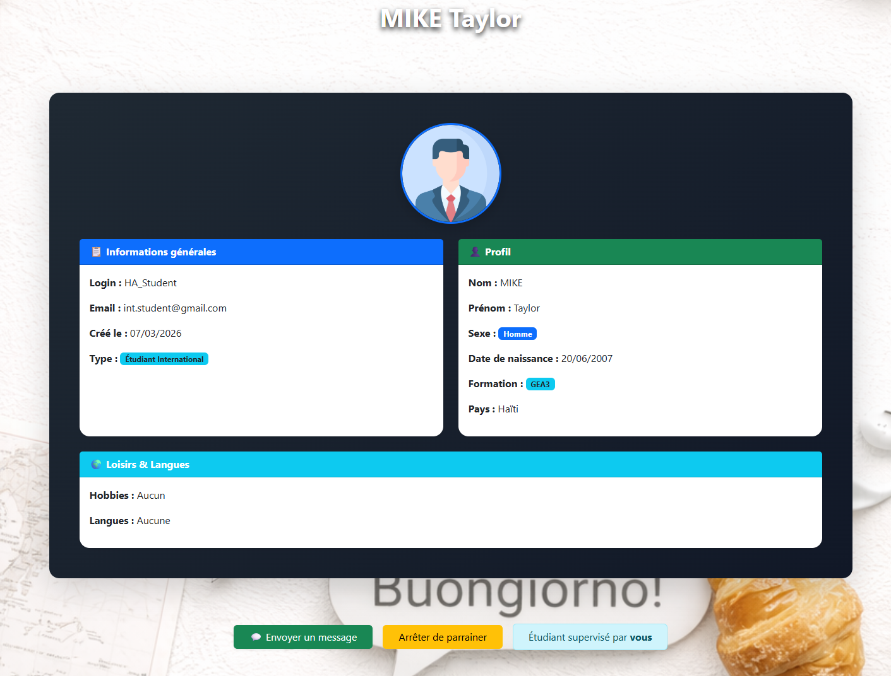
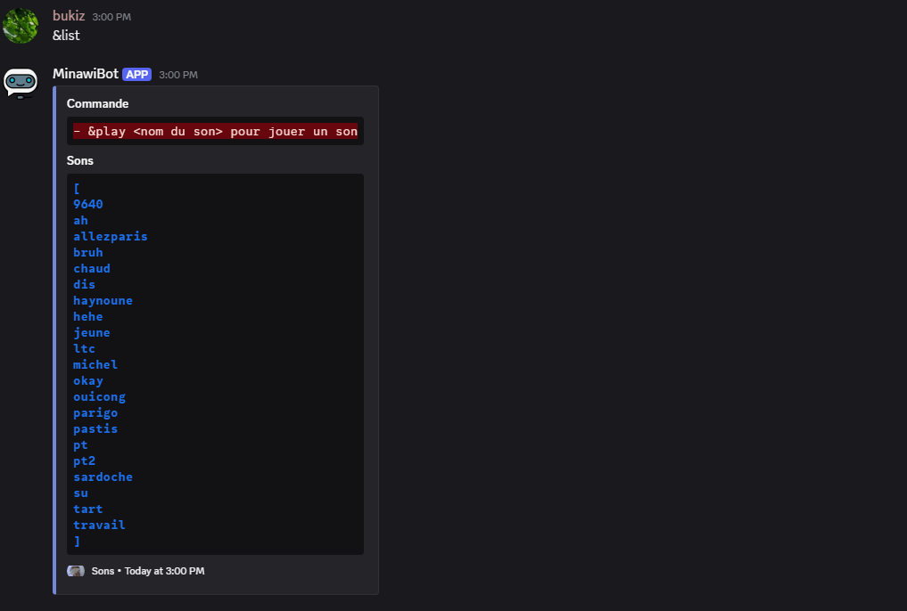

Mes projets
Bot Twitch
Ce projet a fait l'object de développement d'un bot Twitch avec de nombreuses commandes que le streamer ou les internautes (viewers) peuvent appeller dans le chat textuel, notamment la récupération d'un clip, faire un clip, bannir un utilisateur et pleins d'autre commandes.
Voir le projet
Buddy System
Le campus URCA ont chaque année des étudiants venant du monde entier dans le cadre de leur études et il veulent être accueillis, parrainés ou faire connaissance ? Avec Buddy System, c'est tout à fait possible et sans limite !
Voir le projet
Bot Discord
Il s'agit d'un bot avec lequel vous pouvez vous amusez avec amis, vous pouvez déposer des fichiers "soundboards" et les éxecuter dans un salon vocal, lancer des commandes personnalisées en fonction d'un type utilisateur, regarder vos statistiques du serveur et pleins d'autres.
Voir le projet